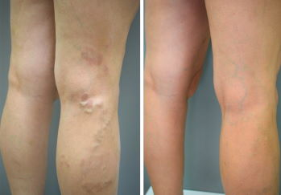

Come eliminare le vene varicose: mi ha aiutato un prodotto di cui non si parla in TV

Tutto è iniziato con un po’ di capillari rotti che sono apparsi nel primo trimestre di gravidanza. La pancia cresceva e con essa aumentava anche il mio peso. In totale, sono ingrassata di 20 chili. Muovermi è diventato difficile. Le gambe erano dolenti e gonfie, prima del parto è apparsa una rete di vene blu-marrone come fosse per giocare a tris.


Il dottore di cui mi fidavo mi ha detto che si trattava di varici e che ogni altra donna incinta ne soffre. Per lui, era colpevole la nostra fisiologia femminile. Solo che gli unguenti che mi aveva prescritto non mi aiutavano affatto. Se indossavo le calze a compressione, riuscivo ad alleviare il dolore ma non per molto. Le vene sembravano sempre più gonfie.
Quando è nato nostro figlio Diego, ho dovuto prendermi cura di lui e dimenticare il mio dolore. Mio figlio era molto agitato, mio marito era al lavoro, non avevo tempo per me stessa. Diego voleva stare sempre in braccio. Poi è cresciuto, ha imparato a gattonare e per me e' diventato ancora più difficile stargli dietro. Appena mi distraevo, lui già mangiava la sabbia dalla lettiera del gatto o metteva in bocca le scarpe di papà. Arrivavo a fine giornata completamente esausta.
Di notte non riuscivo a dormire, soffrivo di dolore, come se qualcuno torturasse le mie gambe col ferro incandescente. Se non andavamo al parco, non riuscivo a dormire perché mi sentivo in colpa. Che razza di mamma sono? ... mi chiedevo.
All’epoca nel mio guardaroba non rimaneva neanche una gonna, anche se il mio fisico mi permetteva di indossare addirittura la minigonna (sono tornata in forma rapidamente, grazie alla mia genetica e anche a mio figlio super attivo). Mi vergognavo terribilmente delle mie gambe ricoperte di nodi blu e protuberanze, quindi le nascondevo sotto i pantaloni.

Quando ho deciso di andare da uno specialista, sembrava già troppo tardi. Le mie vene erano in pessime condizioni. Il dottore mi ha consigliato di sottopormi ad un intervento chirurgico per rimuovere le vene dilatate. E dopo l'operazione, sperare in un miracolo. Perché nessuno mi poteva dare garanzie. Perché una ricaduta poteva sempre succedere.
Mi sono sentita come se la terra si muovesse e io non riuscissi a mantenere l'equilibrio. Dovevo rischiare la mia salute, andare sotto i ferri senza nessuna garanzia.
Io e mio marito abbiamo discusso a lungo di cosa fare. Quindi, abbiamo deciso di posticipare l'operazione e cercare una cura alternativa. Abbiamo chiesto consigli a tutti. Un collega di mio marito ci ha detto che sua madre è stata curata da una guaritrice. Ci ha spiegato dove trovarla.
Abbiamo fatto molta strada (più o meno 600 km) ma non è stato possibile incontrarla perché la guaritrice era già morta. Dato che non aveva figli, aveva condiviso le sue conoscenze con una vicina di casa. Lei ci ha detto che dovevo curare le mie vene con l’ippocastano, l’assenzio e la camomilla.
Appena tornata a casa, ho iniziato la ricerca su Internet, volevo trovare qualche prodotto che contenesse piante da lei indicate. Così ho scoperto , una crema che contiene questi ed altri componenti utili per far sparire le vene varicose. L’ho ordinata. Ha funzionato alla grande! La vecchia non si sbagliava!
Dopo due giorni di utilizzo di ho sentito un certo solletico nelle gambe. È difficile descriverlo a parole, come se tante formiche corressero avanti e indietro. Ho notato che il gonfiore è scomparso.
Dopo una settimana, le gambe non mi facevano più male, anche quando toccavo le varici. La sensazione di pesantezza alle gambe è sparita, camminare è diventato molto più facile. Ero al settimo cielo!

Le lunghe passeggiate nel parco così amate da mio figlio sono diventate una gioia per entrambi. Potevamo correre fino alla sera!


Giorno dopo giorno, questa crema mi ha aiutato a curare le mie gambe. Le vene sono diventate più chiare e meno visibili. Ora posso di nuovo indossare minigonne e abiti. Per questo mi ci sono voluti due mesi e 3 confezioni di .
P.S.: Dalla pubblicazione di questo post sono passati circa 8 mesi e non ho più il problema di vene varicose! Spero che continui così.
Sono contenta di non aver accettato l'intervento. E neanche voi dovete farlo! Perché rischiare grosso, se c'è un buon rimedio?
La mia esperienza potrebbe diventare un esempio per voi: non trascurate la vostra salute. So quanto sia insopportabile questa malattia, per questo ho deciso di condividere la mia storia con voi.

Gli esperti spiegano cosa fare se hai uno o più dei seguenti sintomi: gambe stanche e pesanti, vene gonfie e ingrossate.

La scoperta rivoluzionaria degli scienziati per combattere le vene varicose è una svolta epocale nel campo della flebologia e una vittoria annunciata sulla malattia. Leggi l'articolo.

Le vene varicose sono pericolose per la salute e per la vita stessa: ogni anno i coaguli del sangue provocati dalle vene varicose fanno morire circa l’1% della popolazione.

14 commenti
Buongiorno Silvana! Leggo la Sua storia e mi si stringe il cuore. Ho addirittura pianto alla fine, sono così felice per voi, Dio vi benedica! E questa crema la consiglierò a tutti coloro che soffrono della stessa malattia.
Ho 27 anni e ho già il secondo stadio delle vene varicose. I flebologi mi consigliano di prepararmi a un intervento chirurgico, dicono che altrimenti non mi possono aiutare. Vorrei provare questo prodotto, forse mi aiuterà.
Compra e non te ne pentirai! E prendi subito 2 confezioni se hai già le vene tanto dilatate. Non posso dire che subito, ma le vene varicose sono sparite. All'inizio, è scomparsa la sensazione di pesantezza alle gambe. Posso di nuovo mettere i tacchi di 8‑10 cm. Poi è passato il gonfiore. Dopo un mese, le vene sono diventate meno scure, dopo 3 mesi sono spariti i noduli sulle gambe, che erano davvero enormi. Ora consiglio questa crema a tutti miei amici e conoscenti.
Vi capisco. Sono una presentatrice di eventi. Prima ogni movimento mi causava un notevole disagio. Prendevo tante compresse e facevo diversi impacchi, ma tutto era inutile. Poi ho saputo di . All'inizio la crema non mi ha aiutato. Poi ho pensato di applicarla 2 volte al giorno e ho subito visto i risultati! Sono tornata in vita! Ci è voluto un po' di più per me, a quanto pare dipende dallo stato delle vene, ma ecco il mio risultato:
Da tempo soffro di vene varicose. Tre anni fa, mi hanno fatto la scleroterapia su una gamba. Ora, dopo la gravidanza, ho ancora più vene dilatate. Capisco che la chirurgia non è una soluzione per me, ma nulla di ciò che il dottore mi aveva prescritto mi ha aiutato.
La stessa cosa per me. Durante la gravidanza, le gambe sono diventate terribilmente gonfie. Forse è anche stata un po' colpa mia, visto che sono aumentata di 27 chili. Ho comprato diversi unguenti ma senza alcun risultato.
Gli unguenti non aiutano perché non contengono ingredienti utili. La corruzione è ovunque! Le case farmaceutiche pagano per vendere le loro merci. La composizione di tanti medicinali è inutile o persino pericolosa per la salute. E noi dobbiamo pagare per un prodotto del genere. So di cosa sto parlando. Mia mamma è morta a causa di medicinali inefficaci, ma poteva essere salvata…
Ma cosa stai dicendo? Stai accusando la farmacia della morte di tua madre? Forse avresti dovuto portarla in ospedale? La crema è davvero super! Ho visto il suo effetto su mia sorella. Ora ha le gambe come di una ragazzina. Anche se mia sorella ha 48 anni.
Ho appena ricevuto il mio pacco. Leggo la sua composizione e vedo che è molto naturale. Voglio provarla e poi vi scrivo dei miei risultati. Spero che possa guarire.
Mia zia è stata operata, le hanno rimosso i noduli e i coaguli. Sembrava che tutto filasse per il meglio, ma poi le vene varicose sono riapparse. Dopo soli due anni.
Non lo so, forse le è capitato un medico incompetente? Mia sorella non soffre di vene varicose anche sette anni dopo l’intervento. Se avesse saputo prima di questa crema, non si sarebbe di certo sottoposta all’intervento in questione.
Ho sentito parlare di questa crema. Dicono che è super efficace!
Sto usando la crema da tre mesi. Che ci crediate o no, ma ha eliminato la cianosi, il gonfiore e l’infiammazione delle vene. Per farvelo vedere, allego due foto prima e dopo:
Ragazze, grazie per le vostre opinioni! Vorrei prendere subito questa crema. Non riesco più a sopportare queste terribili vene dilatate sulle gambe: (ho paura di un intervento chirurgico. Chissà come andrà a finire ... Io devo prendermi cura della mia famiglia.
Prenota con uno sconto del 50%
Ordina